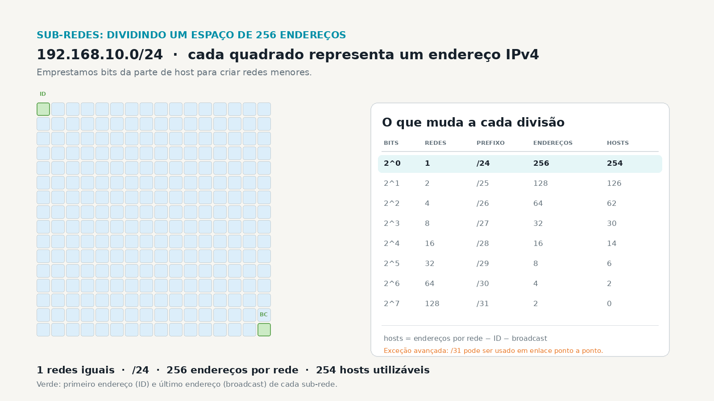

Meio compartilhado · hub / half-duplex
PC-01PC-02PC-03PC-04HUB
Um domínio de colisão. Todos compartilham o mesmo meio. É cenário histórico; não é o padrão de uma porta switch full-duplex.
CIDR e VLSM permitem usar endereços com precisão. Mas antes do cálculo, é preciso entender o que estamos separando: colisões, broadcasts, equipes, serviços e superfícies de ataque.
Imagine uma empresa com dezenas de equipamentos. Se tudo estiver no mesmo segmento de camada 2, um broadcast chega a todos. E, em uma rede antiga com hub ou enlace half-duplex compartilhado, transmissões podem disputar o mesmo meio e colidir.
Um domínio de colisão. Todos compartilham o mesmo meio. É cenário histórico; não é o padrão de uma porta switch full-duplex.
Um domínio de colisão por porta. Em full-duplex não há colisões normais; ainda pode haver um único domínio de broadcast por VLAN.
Domínio de colisão é o trecho no qual duas transmissões simultâneas poderiam colidir. Domínio de broadcast é o conjunto de interfaces que recebe um quadro de broadcast de camada 2.
Uma VLAN 10 e uma VLAN 20 estão conectadas a um roteador ou switch de camada 3. Um broadcast originado na VLAN 10 alcança a VLAN 20?
A segmentação exige uma fronteira: VLAN + interface de camada 3, roteador ou switch L3. CIDR/VLSM definem o plano de endereçamento; sozinhos não criam uma fronteira de broadcast.
Em IPv4, o prefixo informa quantos bits pertencem à rede. Em uma rede /24, restam 8 bits de host: 256 endereços no total. Ao emprestar bits de host, formamos sub-redes menores.
Permite expressar prefixos sem depender das antigas classes A/B/C. Um /25 representa 128 endereços; um /26, 64.
Usa prefixos diferentes no mesmo plano: uma rede /25 para 100 hosts, /27 para 25 e /30 para um enlace ponto a ponto, por exemplo.
Cada quadrado representa um endereço IPv4 de uma rede com 256 posições. As células verdes são o ID e o broadcast de cada sub-rede. A tabela mostra a troca: mais redes significam menos endereços por rede.

Na divisão /25: 2 redes, 128 endereços em cada uma e 126 hosts utilizáveis. Para /26: 4 redes, 64 endereços e 62 hosts utilizáveis.
Informe os hosts necessários e uma rede-base. O simulador encontra o menor bloco que atende a demanda, indica o prefixo e mostra quantas sub-redes desse tamanho cabem na rede-base. Para preservar a visualização, a malha usa os primeiros 256 endereços quando a base é maior que /24.
Exemplo: 100 hosts exigem 7 bits de host: 27 = 128 endereços, 126 utilizáveis, prefixo /25.
| Tecnologia | Objetivo | Evidência |
|---|---|---|
| WWindows | Ver IP, máscara e gateway | ipconfig /all |
| LLinux | Ver endereços e rotas | ip addr e ip route |
| CCisco IOS | Ver VLANs e interfaces L3 | show vlan brief e show ip interface brief |
PS C:\> ipconfig /all # IPv4, máscara, gateway e DNS
$ ip addr show $ ip route show # endereço/prefixo e rota padrão
SW1# show vlan brief SW1# show ip interface brief # segmentos e gateways L3
Meta: 11/15. Corrija, revise as questões destacadas e tente novamente.
Uma empresa tem 100 usuários, 20 telefones IP, 12 servidores, 15 dispositivos IoT e dois enlaces entre equipamentos de camada 3. A rede-base disponível é 10.10.0.0/23.
Uma proposta VLSM com uma sub-rede por grupo, seu prefixo, quantidade de hosts utilizáveis e a justificativa de uma política entre Usuários, Servidores e IoT.
Comece pelo maior bloco, evite sobreposição e explique quais broadcasts cada segmento conterá. Lembre-se: a rota entre VLANs deve ser deliberadamente permitida ou negada.
A próxima aula aprofunda o subnetting e transforma um requisito de negócio em um plano de endereçamento verificável.